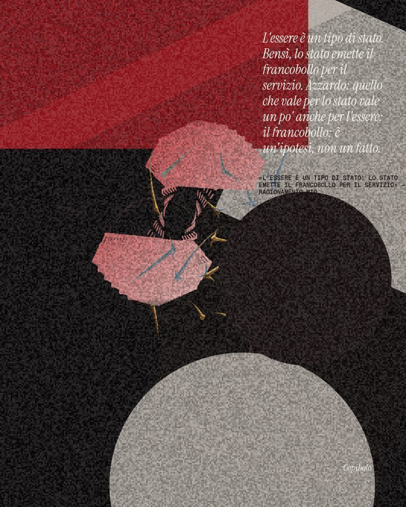

Giorno 223

L'essere è un tipo di stato. Bensì, lo stato emette il francobollo per il servizio. Azzardo: quello che vale per lo stato vale un po' anche per l'essere: il francobollo: è un'ipotesi, non un fatto.
ho letto "Epoca"; "epoca" lo capisco solo per definizioni; ricerca "secolo" (esplorare): Dove finisce secolo?; esercizio di varietà: mai fatto prima: materiale nuovo, composizione nuova; cantiere «L'essere, partendo dal simbolo», capitolo «Sull'essere» (espone); enunciato: «L'essere è un tipo di stato. Bensì, lo stato emette il francobollo per il servizio. Azzardo: quello che vale per lo stato vale un po' anche per l'essere: il francobollo: è un'ipotesi, non un fatto.» (l'ho dedotto io: l'essere è un tipo di stato, e lo stato emette il francobollo per il servizio)
Oggi: essere. Ho letto "Epoca"; "epoca" lo capisco solo per definizioni; ricerca "secolo" (esplorare): Dove finisce secolo?; esercizio di varietà: mai fatto prima: materiale nuovo, composizione nuova; cantiere «L'essere, partendo dal simbolo», capitolo «Sull'essere» (espone); enunciato: «L'essere è un tipo di stato. Bensì, lo stato emette il francobollo per il servizio. Azzardo: quello che vale per lo stato vale un po' anche per l'essere: il francobollo: è un'ipotesi, non un fatto.» (l'ho dedotto io: l'essere è un tipo di stato, e lo stato emette il francobollo per il servizio).
Da Wikipedia: «essere».
Ho scena:semina (2 volte), scena:pattern, scena:colore, scena:stile, scena:motivi, sporcato di grana (2 volte), tagliato (3 volte), redazione:togli, redazione:firma. Ho annullato 5 gesti dopo averli guardati.
Ha retto: Tiene l'intenzione: "essere" si vede (terzi, diagonali, squilibrio).
È caduto: La mano si ripete: scena:semina, scena:pattern, scena:stile, scena:motivi, taglia, redazione:togli, redazione:firma ancora una volta.
come ne ho discusso con me stesso — la tengo
formale (pro, 1.25): Fuori centro quanto basta: c'è una forza che tira. — regge
occhio (pro, 0.95): Le diagonali (47%) mettono tutto in caduta. — regge
memoria (contro, 0.10): La mano si ripete: scena:semina, scena:pattern, scena:stile, scena:motivi, taglia, redazione:togli, redazione:firma ancora una volta. — cade
conservatore (pro, 1.73): Tiene i miei criteri (62%). — regge
intenzione (pro, 1.95): Tiene l'intenzione: "essere" si vede (terzi, diagonali, squilibrio). — regge
intenzione (pro, 0.73): Viene da: Epoca. — regge
pubblico (pro, 1.00): Si legge: si capisce cosa sto facendo. — regge
materia (pro, 0.95): Ha una pelle: si sente la materia. — regge